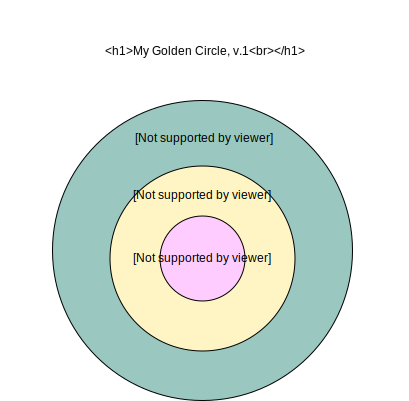
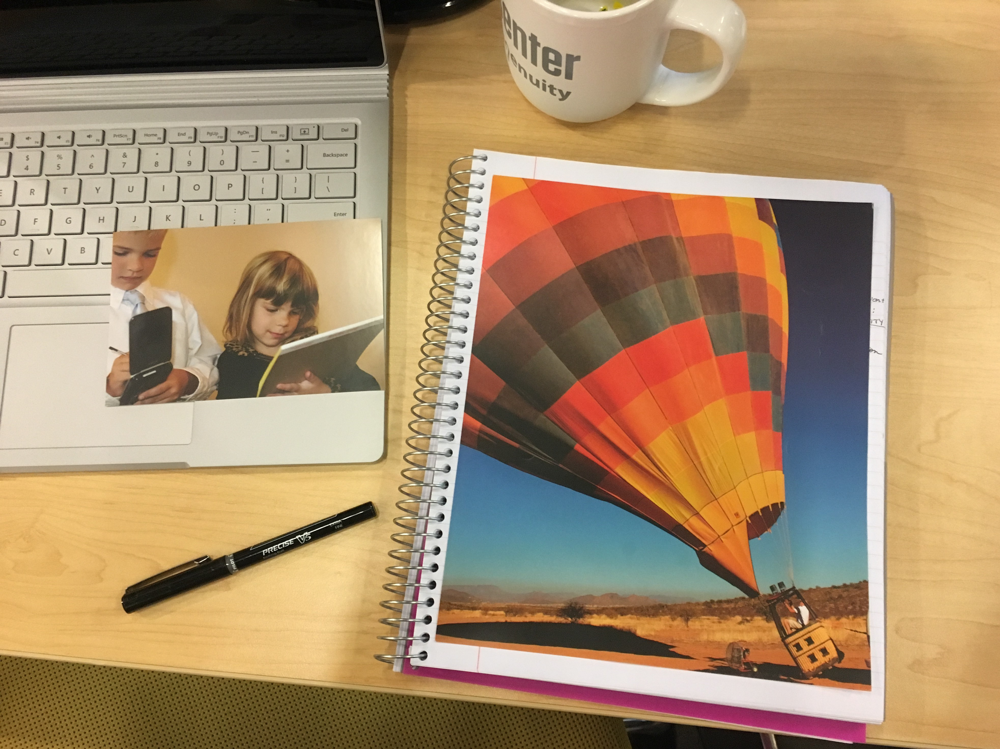

Last Updated: 5/1/2018
Career Buddies: Carlos Marquez and Jullyane Hawkins
Our first activity in pro dev was to begin thinking about our why, after watching a TED talk by Simon Sinek. The idea is that your WHY should guide what you do. And if you are following your WHY, and sharing that with developers and potential employers, they will remember you because of your passion and your purpose. This is still a work in progress for me and I will be updating it with a new version.
Name + What + Why + How + Question (invitation) = Elevator Pitch
Hi, my name is Yvette. I connect individuals to resources and services to that improve our community. I am doing this in partnership with non-profits and the City of Albuquerque using front-end and back-end languages. Do you do any work with the community?
The second thing we talked about in pro dev was our online presence. Particularly as web developers, how we represent ourselves online is part of our initial impression. If we have a very poorly designed page, or employers or clients can easily google us to find photos of us doing keg stands, odds are we won't be projecting the image we want. In crafting an online presence, I have set up a new Gmail address to use solely for professional account and purposes. I have created a Stack Exchange account with this email address, purchased my personal web page with it, and set up a new twitter account with it. I will also be changing my Github and other associated accounts to reflect the new email.
Although one might think business cards are out of style, they are more important than ever. I have begun designing my card which will have a link to point people to my personal page so that I can more dynamically showcase myself there.
We spent some time Googling ourselves to see what came up. Google displays less about me than I expected, for which I am glad. I try to be pretty private online, and that is why I have decided to delete my Facebook in one week. I do need to work on my professional identity online. My Twitter is brand new and did not come up.
| Google Search Results | ||
|---|---|---|
| Personal | Professional | |
| Identity | Yvejr | Legal name |
| Channel | LinkedIn, GitHub | Facebook,Google+ |
| Content | Adult tutor, tech support, some leadership,transitioning into development | Photography, likes quotes |
Here is a snapshot of how I feel right now about my new career and how I imagine my future in a couple years. On the left, which is me now, I feel like a child who is enthusiastic about learning. I also feel like a child who has so much to learn compared to an adult. On the right is the image of a hot air ballon. Hot air ballooning is our thing here in New Mexico! I love home, and I imagine my future taking off like this, on an adventure somewhere, where I don't know exactly where I will land. You just go with the wind a little bit, the way I want my interests to develop organically.
I thought pretty hard about this assignment. Sure, I have been told I have potential- to be a good photographer, a tour guide, a chef, a teacher, a trainer, a leader, a public speaker...A lot of times I believed these things, and sometimes it seemed way too out of my league. Once, when I explained why I wanted to code for a living, my husband responded emphatically, "That's perfect for you!" I am very analytical and detail oriented, and I like logic.
I think the difference between pursuing your goals and not pursuing are two things: 1) believing you can do it and 2) wanting to do it. Of course, having the tools or foundation to do so is important, but that is a different topic.
There really aren't any obstacles right now that I can't overcome. The biggest thing is finding time to do all the things I want to do to get where I want to be. I quit my job of ten years and put everything else on hold so that I can focus on getting a solid start in this career. I believe I've got this! What I can do is be more strategic with my time. If I am stuck on something, I need to give it a rest and work on something else. Also, getting more sleep is important - but as I type this, it's already late!
I am always learning and there are a lot of gaps in my knowledge right now, but I know my value. I am enthusiastic, curious, an encourager, a good team member, and I do good work.
Our first team building excercise was to play a cooperative board game that none of us had played before. It was a fun game but of course we had to read the documentation! Marlon's strength seemed to be in maintaining consistency with following the rules. He was able to make sure we followed the rules and told us if we missed a step. G is overall pretty quiet, but when he has an opinion, he will make it known. He is more observant and noticed details that helped with strategy. Batman is showed some creative thinking, coming up with things that didn't occur to me. That's a pretty good problem solving skill to have. As for me, I think my strength came in from jumping in and getting the game going, and asking questions. I feel like more of a facilitator in groups to help things move along and make sure that everyone is heard. One concern I have with this is being seen as controlling, and that is not my intention. So, I will have to make sure to be aware of when to step back in the process. Overall, I think we have a little bit of a start on building our team by learning a little bit of our individual strengths.
Week one flew by! Bootcamp on one hand has been pretty easy because we have had a lot of lectures. On the other hand, being able to apply the information on the homework assignment for this weekend was challenging. We had to design a database, which probably took me about 6 hours to complete, with a lot of "marinating" my thoughts in between. Ultimately, I keep seeing how much I have to learn. I am still learning how to elucidate the questions that I have and use the documentation.
In week one, Dan shared an article called Why Programming is Damn Hard. I spent most of week two at the Cliff of Confusion. Understanding was either just in out just out of reach, and at the end of the day, I wasn't always sure I grabbed the right fruit. I realized that I needed to sharpen some of my personal tools to learn better. First, I needed to ask better questions to get the information that I needed. One example is “what’s the use case for x?” to understand when to use a specific function, method, etc. The other question I learned to re-phrase is “where in the documentation can I find that?” or “what documentation should I check?” I have also found it very useful to review my peers’ coding to see how they solved a problem, rather than asking them, because we are all still getting the hang of this and communicate about it differently.
The second tool in my pocket has been learning what documentation is. I was becoming frustrated when people kept repeating “just read the documentation,” when it literally dawned on me like the sun rising with angels singing - “There’s actually a manual for PHP?” I thought documentation was just a general term for “go Google it, duh.” I am not sure what led me to think that, but I am really glad I learned that there is official documentation and I know exactly where to look for information now.
Relating to documentation, I am making friends with some different resources for learning. I found some Lynda.com videos that are helping me with PHP object oriented programming, which has probably tied with database building for the hardest topics so far. I have also been getting better at using Stack Overflow for help, and I created an account there. There is also some unhelpful information out there - I exclude any search results from W3 Schools unless it pertains to HTML5 or CSS3.
More than anything, I have been learning to parse concepts and huge chunks of code. I tend to be a very methodical person, but it has been a challenge to work with so many lines of code. It is easy to get lost. In this, mapping it out on paper has helped keep my focused on the goal of the code. I can check off the parts that I have completed.
I am a perfectionist, which comes with positive effects that I make work for me, and a couple not so good effects. One of the negatives is that I dislike needing help because it demonstrates a knowledge gap. But in the development world, while knowledge is deeply respected, a zeal and ability for learning is even more important. How can you learn without recognizing what you do not know? This reminds me of one of my all-time favorite quotes by the philosopher Epictetus:
"It is impossible for a man to learn what he thinks he already knows."
When I signed up and paid for this bootcamp, I knew this area would be a challenge for me, so I had a plan to address it. I would ask questions, collaborate with peers, and keep a growth mindset about my learning. So far, it has been working.
I am not (outwardly) shy about asking questions in class. I do a lot of Google-fu to get the information I want, but some questions help facilitate learning for others, too. There were some things this past week that I would not have understood without seeing an example or hearing it explained in a different way. Dylan has commented twice to me that he likes my questions for making class more engaging, and to keep it up. As a little bit of imposter syndrome crept in, looking around and seeing my peers at what feels like light years ahead of me, I remember that we are all learning, different ways and at different speeds, and even from different starting points. So many sites like StackOverflow exist just for developers to ask question and help one another.
I am learning to turn to my peers more often after struggling on my own for a little while. I love how we have been sharing information and help through Slack. It makes me feel like we are a team. In a world of open sourcing, I believe that like the idea of Karma, what we put into the world, we will get back.
Again, a week has passed by so quickly! We had some great guest speakers and started our capstone projects. I really enjoyed cooking up ideas with classmates and seeing the number of ideas that we submitted afterwards. Just talking about ideas out loud helped me come up with things I wouldn't have thought of otherwise. Once we had our team and project assignments, it was also a fun process to create our vision and goals for the project. It really solidified in my mind that this will be a team project, because there were some things that we did not entirely agree on all together, but we were able to make a decision and move forward.
Early in the week, we met Steve Cook, a local programming guru who has an array of start-ups and lots of good advice on being a developer and entrepreneur. The thing that stands out most to me is a quote he saved from his very early days working with computers:
"Computers are the stupidest things on earth. They do exactly what you tell them to do."Quite literally, programming is an exact input/output from the developer. It has great implications in that you can either do something never before done, or you can have lines of rubbish. Either way, it is up to you - it reminds me a lot having an internal locus of control as a developer. Conversely, being afraid of code and programs would be an external locus of control. If we master our craft, we can be in charge.
My favorite guest speaker was Rana, a developer from the Gaza strip in Palestine. She really inspired me with the idea of a global development community. Just thinking about what life could be like with your head stuck in your laptop, never looking around or networking, is a limiting way to evolve as a developer.
We also heard from John, the founder of Deep Dive Coding, and Dean, the president of NM Tech Council. The main take away was that the industry of tech in NM is small but growing, and there are some very invested groups working on bringing more work and skill to the area. John additionally had a TON of tips on branding and other pro-dev stuff.
Speaking of pro-dev, I have been working on ordering business cards, but I am stuck. Just knowing what I want as a developer is a challenge, so building my brand is on the backburner more than I would like it to be. The golden circle activity has been on my mind as well. It's noteworthy that it takes concentrated effort to make yourself known and figure out who you are. Just being yourself is not enough! You have to put yourself out there in a strategic way at the outset. Hopefully, week four will bring some clarity to all of this and where I am going, and branding will follow suite.